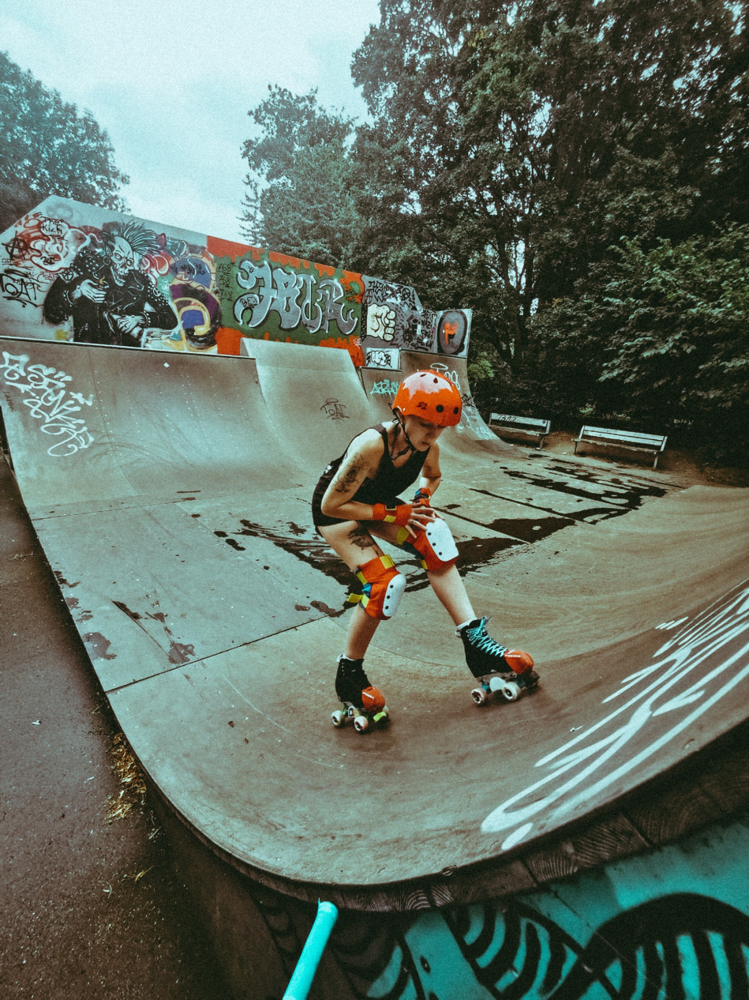

How to get off the hills.
Introduction:
Navigating downhill sections, whether you're hiking, biking, or driving, requires skill and caution to ensure a safe and controlled descent. Descending hills can be challenging, especially when faced with steep gradients or uneven terrain. In this article, we will provide you with valuable tips and techniques on how to safely get off hills, allowing you to confidently navigate downhill sections of your outdoor adventures.
1. Assess the Descent:
Before starting your descent, take a moment to assess the hill's characteristics. Consider factors such as steepness, terrain conditions, obstacles, and the length of the descent. This initial evaluation will help you plan your approach and choose the most appropriate technique for descending.
2. Maintain Proper Body Position:
Maintaining a balanced and stable body position is crucial when descending hills. Keep your body weight centered and slightly back, which helps provide stability and control. Keep your knees slightly bent to absorb any impact or uneven terrain, allowing for better balance and maneuverability.
3. Use Short, Controlled Steps:
When descending, take short, controlled steps rather than long strides. This technique helps maintain balance and control your momentum. Engage your core muscles and use your legs as shock absorbers, allowing your body to adapt to changes in terrain and prevent excessive strain on your joints.
4. Select the Right Footwear:
Proper footwear plays a significant role in a safe descent. Choose footwear with good traction and ankle support to provide stability and prevent slips or twists. High-quality hiking boots or trail running shoes with a sturdy sole are ideal for outdoor activities involving hill descents.Proper footwear plays a significant role in a safe descent. Choose footwear with good traction and ankle support to provide stability and prevent slips or twists. High-quality hiking boots or trail running shoes with a sturdy sole are ideal for outdoor activities involving hill descents.

5. Utilize Side Steps or Zigzag Technique:
On particularly steep or treacherous descents, it can be helpful to use side steps or a zigzagging pattern. This technique reduces the overall gradient and provides more stability by distributing your weight across a wider area. Move diagonally across the hill, taking short steps, and use your arms for balance.
6. Maintain a Consistent Pace:
Keep a consistent pace throughout the descent to maintain control. Avoid rushing or letting momentum build up, as this can lead to loss of control. Use your footwork and body position to modulate your speed, adjusting as necessary to match the terrain and your comfort level.
7. Use Natural Features and Obstacles:
When possible, utilize natural features and obstacles on the hill to aid in your descent. Look for rocks, tree roots, or stable vegetation that can provide extra grip and support. Plan your path accordingly, taking advantage of these features to maintain stability and control.
8. Stay Focused and Aler
Throughout the descent, remain focused and aware of your surroundings. Pay attention to changes in terrain, potential hazards, or any signs of instability. Maintain a proactive mindset and make adjustments as needed to ensure a safe descent.
Conclusion:
TWhen it comes to roller skating, wearing protective gear is crucial to ensure your safety and prevent injuries. Knee and elbow pads, wrist guards, and helmets are essential pieces of protection to consider. Invest in quality gear that offers proper fit, comfort, and impact resistance. Remember, wearing protective gear not only reduces the risk of injuries but also gives you the confidence to enjoy roller skating to the fullest. Prioritize your safety and make responsible choices when it comes to protective gear for a safe and enjoyable roller skating experience.